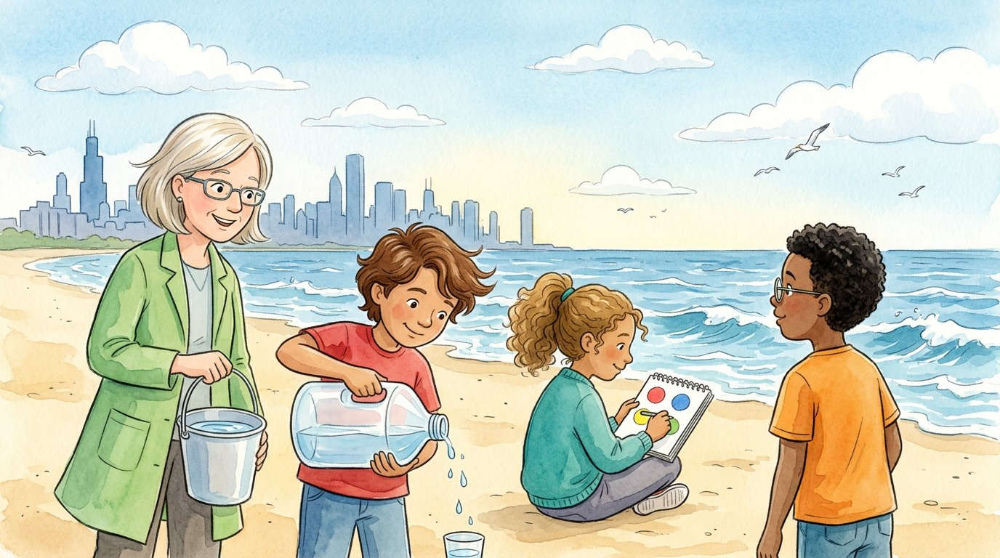

Grade 5 · Science · 5-ESS2-1 · 5-ESS2-2
The lake that touches everything
A story about how land, water, air and living things work together, and about how much of Earth's water is fresh.
El lago que lo toca todo. Un cuento sobre cómo trabajan juntos el suelo, el agua, el aire y los seres vivos, y sobre cuánta agua dulce hay en la Tierra.
Science words you will learn
Tap a green word to see what it means.
Toca una palabra verde para ver qué significa. Con la ayuda activada, verás también la definición en español.
The story
El cuento está en inglés. Pulsa «Listen to the story» para escucharlo y toca las palabras verdes cuando no entiendas una.
On a windy day in May, the class went to the beach at Lake Michigan. Waves crashed on the sand, and seagulls screamed over the water. Ms. Kowalski asked everyone to sit in a circle. "Today, Earth is our classroom," she said.
"Scientists divide Earth into four big parts, called spheres," she explained. Athena opened her sketchbook and drew four circles. "The sand and the rocks under you are the . The lake is part of the . The wind is the . And the gulls, the plants and all of you are the ."
"They're not separate," the teacher continued. "They all the time. Look around and find examples." Daniel pointed at the water. "The wind is pushing the water and making waves. The atmosphere is acting on the hydrosphere."
Elías watched a wave pull back from the shore, taking some sand with it. "The waves are moving the sand," he said. "The hydrosphere is changing the geosphere." Athena drew an arrow between two circles.
Athena looked at a gull diving into the lake and coming back up with a fish. "The biosphere needs the hydrosphere," she said. "And the plants on the dunes have roots in the sand, and they help keep the sand from blowing away." Her sketchbook was now full of arrows between the four circles.
Then Ms. Kowalski took out a big jug with a hundred cups of water in it. "Imagine that this is all the water on Earth," she said. "About 97 cups are salt water, in the oceans. We can't drink it." She poured them into a bucket. Only three cups were left in the jug.
"Two of these cups are frozen in ice and glaciers, far away at the poles," she said, and she poured them out. "Less than one cup is that we can reach, in lakes, rivers and underground." Elías carefully poured a few drops into a tiny cup. "That's it?" he said. "That's all the water we can drink?"
"It's not much," said Ms. Kowalski. "That's why the Great Lakes are so important. They hold about one fifth of all the fresh water on the surface of Earth." Daniel looked out at the big blue lake. "And Chicago gets its drinking water from right here," he said.
Elías held the tiny cup with both hands, very carefully, as if it were made of glass. "I'm never going to spill water again," he said. Just then, a big wave crashed in and soaked his sneakers. "Well," said Athena, laughing, "the hydrosphere just interacted with you."
Glossary
- geosphere
- The solid part of Earth: rocks, sand, soil and mountains.
- geosfera: La parte sólida de la Tierra: las rocas, la arena, el suelo y las montañas.
- hydrosphere
- All of Earth's water: oceans, lakes, rivers, ice and water underground.
- hidrosfera: Toda el agua de la Tierra: los océanos, los lagos, los ríos, el hielo y el agua subterránea.
- atmosphere
- The layer of air around Earth.
- atmósfera: La capa de aire que rodea la Tierra.
- biosphere
- All the living things on Earth: plants, animals and people.
- biosfera: Todos los seres vivos de la Tierra: las plantas, los animales y las personas.
- interact
- To act on each other. For example, wind (air) makes waves (water).
- interactuar: Actuar unos sobre otros. Por ejemplo, el viento (aire) forma las olas (agua).
- fresh water
- Water that is not salty. People, animals and plants need it to live.
- agua dulce: Agua que no es salada. Las personas, los animales y las plantas la necesitan para vivir.
Questions
Choose the correct answer. If you make a mistake, the story shows you where the answer is.
Elige la respuesta correcta. Si te equivocas, el cuento te muestra dónde está la respuesta.
-
Question A. How was the atmosphere acting on the hydrosphere?
¿Cómo actuaba la atmósfera sobre la hidrosfera?
The wind (atmosphere) was pushing the water (hydrosphere) and making waves.
-
Question B. How was the hydrosphere changing the geosphere?
¿Cómo cambiaba la hidrosfera a la geosfera?
The waves were moving the sand: the hydrosphere was changing the geosphere.
-
Question C. Out of 100 cups of Earth's water, how many are salt water?
De 100 tazas de agua de la Tierra, ¿cuántas son de agua salada?
About 97 cups out of 100 are salt water, in the oceans.
-
Question D. How much of Earth's water is fresh water we can reach?
¿Cuánta agua de la Tierra es agua dulce a nuestro alcance?
Less than one cup out of 100 is fresh water we can reach, in lakes, rivers and underground.
-
Question E. Why are the Great Lakes so important?
¿Por qué son tan importantes los Grandes Lagos?
The Great Lakes hold about one fifth of all the fresh water on the surface of Earth.
Challenge: explain your thinking
Find the interactions
Think about a rainy day in your neighborhood. Give two examples of spheres interacting. For each one, name the two spheres and tell what happens.
Encuentra las interacciones. Piensa en un día de lluvia en tu barrio. Da dos ejemplos de esferas que interactúan. En cada uno, nombra las dos esferas y di qué pasa.
Answer in your notebook or talk it over with a classmate. Use evidence from the story.
Responde en tu cuaderno o coméntalo con un compañero. Usa evidencia del cuento.
Check your thinking
Rain falls from clouds in the air: the atmosphere gives water to the hydrosphere. Rainwater carries soil down the street: the hydrosphere changes the geosphere. Trees take in the rainwater through their roots: the biosphere uses the hydrosphere. Any example works if it names two spheres and explains how one acts on the other.